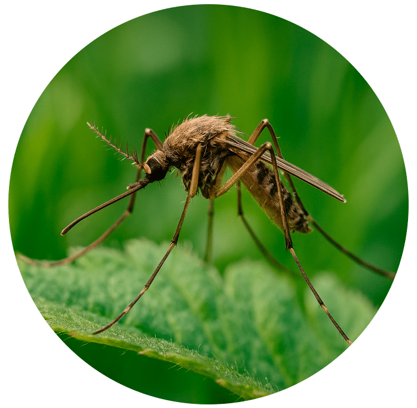

Velkommen til Akupunktur Charlotte Kuszon
Professionel akupunktur i Rungsted med holistisk tilgang
Der behandles med akupunktur og healing.
Akupunktøren
Der behandles med akupunktur og healing.
Posturologi
Hverken vilje, massage eller træning kan regulere de toniske muskler, i det tonus er styret af hjernen, ud fra de oplysninger hjernen får fra kroppen.
Vores speciale
Vi har stor erfaring med akupunktur som smertelindring, og ved spændinger forskellige steder i kroppen.
Eksisteret siden 1998
Gamle traditioner i et moderne samfund
TKM (Traditionel Kinesisk Medicin), eller TCM som man normalt siger, stammer oprindelig fra en flere tusind år gammel kinesisk kultur og livsfilosofi. I det gamle Kina oplevede man værdien af et godt helbred og en fornuftig livsstil. Dette stiler vi også efter.
I vores behandlinger tager vi os af hele kroppen, en holistisk behandling hvor ikke blot symptomet bliver behandlet. Patienten stilles derfor en lang række spørgsmål vedrørende helbredsmæssige tilstand, ligesom jeg laver en irisanalyse, som kan hjælpe til at stille den rigtige diagnose.
Akupunktur kan hjælpe mennesket af, med mange sygdomme, uden brug fra syntetiske eller kemiske midler.
Medlem af Danske Akupunktører
Bestil tid til akupunktur i Rungsted
Hvis du er interesseret i at bestille tid til akupunktur i Rungsted, eller vil høre mere om akupunktur som behandlingsform, så er du meget velkommen til at kontakte mig for en uforpligtende samtale.
Har du yderligere spørgsmål, er du velkommen til at skrive en mail på ckuszon@akupunktoeren.com eller ringe til os på telefon 31 60 88 80.

Én video. Én oplevelse. Myggefri
Oplev healende beskyttelse mod myg med en 22 sekunders video, der aktiverer kroppens eget forsvar – helt uden produkter eller instruktioner.
MyggeApp.dk tilbyder en dybt fokuseret metode, brugt i over 10 år af både familier og enkeltpersoner.
Se videoen én til to gang med fuld opmærksomhed, og lad effekten virke i 3 til 12 måneder.

Én video. Én oplevelse. Allergifri
Oplev healende lindring af høfeber og allergi med en fokuseret video, der aktiverer kroppens eget forsvar – helt uden produkter eller instruktioner.
AllergiApp.dk tilbyder samme dybt fokuserede metode som MyggeApp, skabt af Charlotte Kuszon.
Se videoen med fuld opmærksomhed, og lad effekten virke i månederne efter.
Kontakt
Bus linje 375 + 381 kører lige til døren.
Vi ligger ganske tæt på Rungsted station.
- Få svar på din henvendelse inden for 1-3 hverdage
- Erfarne fagfolk med mangeårig erfaring
Har du spørgsmål eller ønsker du et tilbud?
Kontakt os allerede i dag for kompetent sparring og rådgivning ved din behandling.